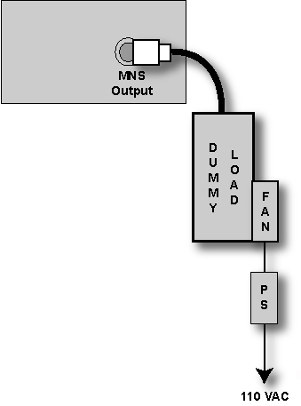
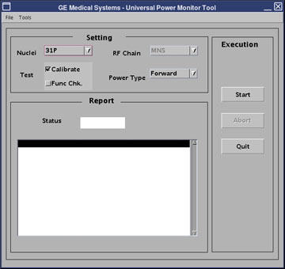
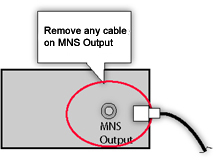

GE Exclusive Use Only
Direction 5670006, Rev# 1
Discovery MR750w GEM Service Methods
Module Version 3.0, Version Date 6/15/09
GE Exclusive Use Only |
| Required Persons | Preliminary Reqs | Procedure | Finalization |
|---|---|---|---|
| 1 | Not Applicable | 30 mins | 5 mins |
This calibration procedure sets up the Universal Power Monitor (UPM) for MNS using the system and the Power Measurement Kit. For 1.5T systems, only Forward Power must be completed. For a 3.0T system, both Forward and Reflected Power must be completed.
| Item | Qty | Effectivity | Part# | Manufacturer | |
|---|---|---|---|---|---|
| Power Measurement Kit | 1 | - | 46-317724G1 or G2 | - | |
| RF Test Cables Kit | 1 | - | 46-255816G1 | - | |
| 50 ohm 200 watt, 30 dB Attenuator (Dummy Load) | 1 | - | 46-317724P4 | - | |
| 3.0T Power Measurement Kit (Wattmeter Kit) | 1 | - | 2372868 | - | |
| For 1.5T Systems: | N/A | - | - | - | |
| For 3.0T Systems: | N/A | - | - | - | |
| ||||
| FATAL ELECTRIC SHOCK HAZARD! | ||||
| Dangerous voltage levels exist throughout the UPM Cabinet. | ||||
| MAKE SURE the RF AMPLIFIER IS DISABLED WHEN CONFIGURING THE CALIBRATION TOOLS. |
Inhibit T/R faults by moving Switch 2 (SW2) on the Driver Module in the RF Systems Cabinet to the TR Disable position. (See Illustration 1.)
Illustration 1: Driver Module Switches

For a 3.0T system, plug the power supply on the dummy load into a 110 VAC service outlet in the Systems Cabinet.
Illustration 2: Remove any Cables on MNS Output

| NOTE: | This tool must have the Head coil installed in order to enable coil ID. |
To establish a Landmark, select [New Pt].
Enter the following parameters:
Patient ID: geservice.
Weight: 111.
Install the head coil.
Align the head coil to the alignment light.
Press the [Landmark] button to drive the head coil into the bore.
Start the UPM calibration tool. ( Step shows an example of the UPM tool.)
Illustration 3: UPM Tool

For Restricted Service Tools available to GE Field Service:
Make sure your service key is installed.
Select Calibration Wizard from the calibration menu and Click here to start this tool to start the wizard.
Once the Calibration Wizard starts, select MNS UPM Calibration from the menu, review and approve the pre and post-dependencies, and select Click here to start this tool to start the procedure.
| NOTE: | If unable to start the Restricted Service tools, use the non-proprietary method described next. |
For Non-proprietary Service Tools:
From the Common Service Desktop, select Calibration and UPM Tool from the calibration menu.
Select Click here to start this tool to start the procedure.
The first time running the UPM Calibration tool after a Load from Cold, if the following message displays, The spectroRFampType and upm.config do not match!:
Click File => Edit Config.
On the screen that opens, click [Restore Defaults] and close the screen.
The tool will now have the correct information, and this message will not re-display during future UPM calibrations.
Select the Nuclei: [3IP].
Select the RF Chain to calibrate: [MNS].
Select the Power (monitor) Type: [Forward].
Click the [Calibrate] button.
Click the [Start] button, verify the hardware setup is satisfactory, then select Yes.
| NOTE: | A status message should notify the user of the current step in progress, and indicate Pass/Fail upon completion of the UPM calibration. If a failure occurs, see Step . |
1.5T systems are complete at this point. Select [Quit] from the UPM GUI, and proceed to Finalization, Step 1.
For 3.0T systems, continue to MNS Reflected Power Calibration (3.0T Systems Only).
Leave the MNS Output Cable disconnected. (See Step .)
Illustration 4: Remove Any Cable on MNS Output

Return to the UPM tool user interface.
Make sure Nuclei 3IP and MNS are selected.
Select the Power (monitor) Type: [Reflected].
Click the [Start] button.
In a few seconds, tool displays a Pass/Fail. If failure occurs, see Step
Verify proper calibration equipment setup.
Check the cabling between the UPM and Amplifier.
Check the mgd_stage file by typing: cd /w/config. Remove the p if necessary (p = UPM emulated).
Perform the Maximum RF power calibration procedure, and repeat the UPM calibration.
Check the UPM for power.
Check the error log for details of UPM failure.
Perform the Body UPM calibration.
If it fails, replace the detector boards; perform a UPM calibration to put the new boards into service.
If it passes, continue to troubleshoot the problem with the Body mode. (Most likely, the problem is with the PA section of the RF Amplifier and the cabling back to the UPM.)
Select [End Exam].
Remove the cables and power measurement equipment from the MNS Amplifier.
Re-attach the MNS heliax cables.
Re-enable the T/R Driver Module by moving Switch 2 (SW2) to TR Enable. (See Illustration 1.)
Upon completion of both Forward and Reflected calibration, perform a TPS Reset.